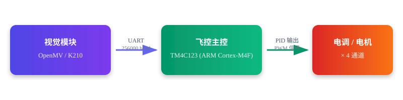
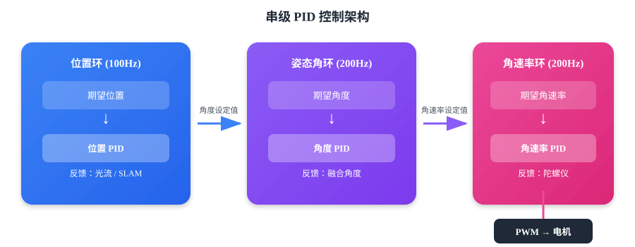
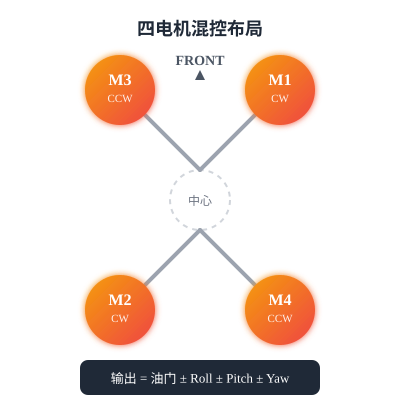

四旋翼无人机飞控系统
从视觉识别到自主飞行：CarryPilot 飞控平台开发实战

项目背景
在 2025 年全国大学生电子设计竞赛（H 题·野生动物巡查系统）中，需要无人机在复杂野外环境中完成动物目标识别、航线巡航与坐标回传等任务。本文围绕备赛过程中开发的飞控系统展开，重点介绍视觉识别与飞行控制两大核心模块的设计与实现。
硬件平台
| 模块 | 型号 | 作用 |
|---|---|---|
| 飞控主芯片 | TI TM4C123GH6PM | ARM Cortex-M4F, 80MHz，姿态解算、PID 控制、任务调度 |
| 底部视觉 | OpenMV H7 / K210 | 目标检测、巡线、AprilTag 定位 |
| IMU | ICM20689 | 三轴陀螺仪 + 三轴加速度计 (1000Hz 采样) |
| 气压计 | SPL06 | 气压高度 |
| 对地测距 | TOFSense / VL53L1X | 精确对地高度 |
| 光流 | LC306 | 水平速度估计 |
| 地面站 | NCLink V1.0.6 | 参数调试、遥测显示 |
系统架构
整套系统采用模块化设计，视觉模块通过 UART 高速串口与飞控主控通信，飞控经过 PID 运算后输出 PWM 信号驱动四个电机。

视觉识别系统
视觉模块通过 UART（256000 baud）与飞控通信，采用统一的 Target_Check 数据结构回传识别结果。支持多种视觉任务，通过 work_mode 变量切换工作模式。
4种
视觉工作模式
95%+
YOLO 识别准确率
20帧
多帧投票窗口
OpenMV 视觉方案
OpenMV 运行 MicroPython，支持色块检测、AprilTag 定位、巡线跟踪、作物识别等多种视觉任务。
Python - 色块检测实现
blob_threshold_rgb = [40, 100, 30, 127, 0, 127] # LAB 阈值
def opv_find_color_blob():
img = sensor.snapshot()
pixels_max = 0
for b in img.find_blobs([blob_threshold_rgb], pixels_threshold=30,
merge=True, margin=50):
if pixels_max < b.pixels():
pixels_max = b.pixels()
target.x = b.cx() # 色块中心 X
target.y = b.cy() # 色块中心 Y
target.pixel = pixels_max # 像素面积
target.flag = 1 # 检测到标志K210 YOLO 深度学习方案
针对动物目标种类多、形态差异大的场景，引入 K210 芯片运行 YOLOv2 轻量化目标检测模型。使用 MaixHub 在线训练平台，标注 5 类动物目标。
Python - 多帧投票策略
N_FRAMES = 20
# 触发后连续采集 20 帧
for _ in range(N_FRAMES):
results.append(detect_one_frame())
# 统计各检测结果出现频次
freq = {}
for idx, r in enumerate(results):
key = tuple(r['packs'])
if key not in freq:
freq[key] = [(idx, r['prob_sum'])]
else:
freq[key].append((idx, r['prob_sum']))
# 选择出现次数最多的结果（并列取置信度最高）
best_key = max(freq.items(), key=lambda x: (len(x[1]), max(v for _, v in x[1])))[0]飞行控制系统
飞控软件采用定时器中断驱动的多任务架构，不同频率处理不同层次的控制。

控制系统采用经典的串级 PID 结构，从内到外分为四层，系统共配置 20 个 PID 控制器，涵盖姿态、高度、水平位置、光流、SDK 等全通道。
C - PID 控制器结构体
typedef struct {
float Kp, Ki, Kd; // PID 三参数
float Expect; // 期望值
float FeedBack; // 反馈值
float Err; // 当前偏差
float Integrate; // 积分累加
float Integrate_Max; // 积分限幅
float Control_OutPut; // 控制输出
float Control_OutPut_Limit; // 输出限幅
uint8 Integrate_Separation_Flag; // 积分分离标志
uint8 Err_Limit_Flag; // 偏差限幅标志
} PID_Controler;电机混控布局

自主飞行与导航
飞控支持多种自主飞行模式，通过 SDK 接口实现"搭积木式"编程，用户组合基本动作即可实现复杂航线。
C - 偏航控制模式
enum YAW_CTRL_MODE {
ROTATE = 0, // 手动偏航（遥控器控制）
AZIMUTH = 1, // 绝对偏航角控制
CLOCKWISE = 2, // 顺时针旋转指定角度
ANTI_CLOCKWISE = 3, // 逆时针旋转指定角度
CLOCKWISE_TURN = 4, // 顺时针角速度控制
ANTI_CLOCKWISE_TURN = 5 // 逆时针角速度控制
};落地成果
1000Hz
IMU 采样率
200Hz
姿态控制频率
20个
PID 控制器
95%+
目标识别准确率
项目资源
- 飞控固件： CarryPilot V6.0.2（基于 TI Tiva C Series TM4C123GH6PM）
- 视觉方案： OpenMV H7 (MicroPython) + K210 (MaixPy + YOLOv2)
- 地面站： NCLink V1.0.6
- 开发环境： Keil MDK µVision 5